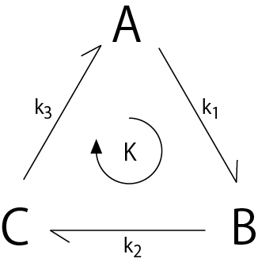

詳細釣り合い ( detailed balance )について-01
注） ここでの説明は詳細釣り合いの定義とはことなる可能性がありますので注意してください
さて，詳細釣り合いについて考えていきましょう．
詳細釣り合いの定義は，ここ，にあるように，
熱平衡にある場合，ある過程とその逆の過程の怒る頻度は等しい
といわれているもののようです．．．．つまり，
という二状態の平衡において，A→Bの頻度とB→A，の頻度は等しいこととなります．
さて，三状態において，A→B→C→A→．．．というように，各状態を遷移していく場合を考えてみましょう．
この状態で，各状態の濃度は変化しない場合を考えます．これを平衡状態というかは微妙です．．．．定常状態？

この場合の正味の反応サイクルの速度は，K{M/s]，で表すことにしましょう．
各状態の濃度変化は，

となり，定常状態なので，濃度変化は０となります，つまり入ってくる量と出ていく量とが等しくなります．
また，各遷移過程の速度が等しくないといけなく，それが反応サイクルの速度となるので，

となります．
また，この定常状態において，各状態の濃度は，

となります．定常状態においても各状態の濃度は等しいわけではなく，速度定数に依存することになります．
つまり，濃度が低くても次の状態への速度定数が低ければいいわけですね．
このようにサイクル，ものの流れを考えることが，詳細釣り合いの定義に含まれるかは．．．．わかりません．．．．
ただ，ATPaseサイクルなどを考える上で，重要な考察となります．
では，逆反応がある場合を検討しましょう．